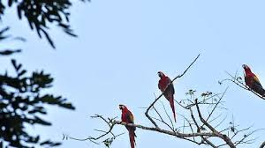
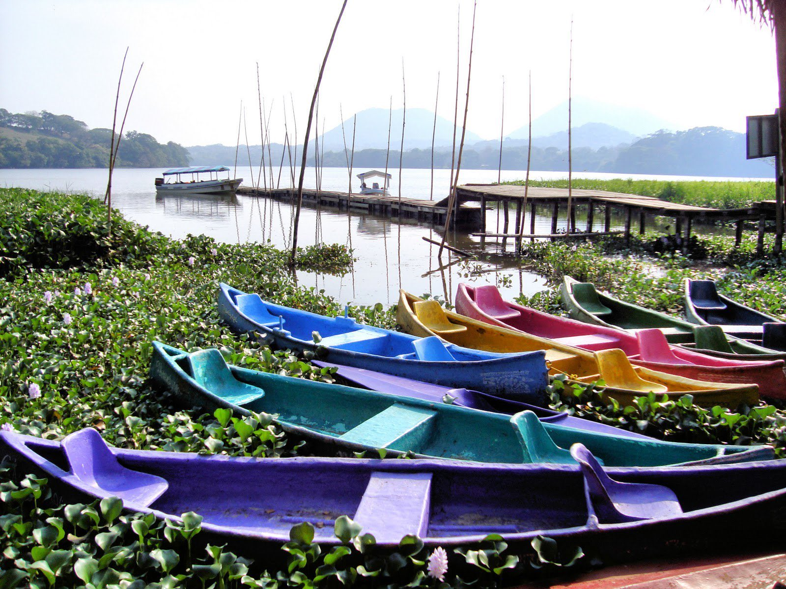
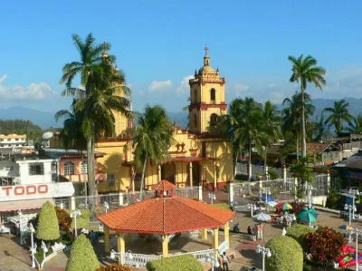
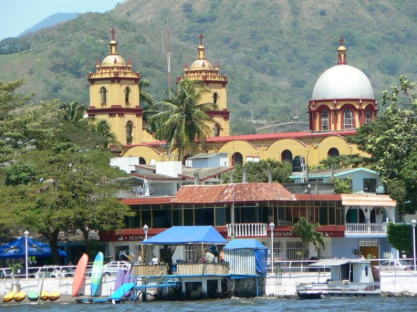

Catemaco
Historia de Catemaco
Catemaco es un municipio del estado de Veracruz ubicado en la región de Los Tuxtlas.
Su nombre proviene del náhuatl y está relacionado con “casas quemadas” o “lugar de casas”.
Actualmente es reconocido por su riqueza natural, cultural y turística.

Laguna de Catemaco
El lago de Catemaco es uno de los principales atractivos turísticos de Veracruz.
Los visitantes realizan recorridos en lancha y disfrutan de paisajes naturales impresionantes.

Kiosko de Catemaco
El centro de Catemaco es uno de los lugares más visitados por turistas y habitantes.
Aquí se realizan actividades culturales y eventos tradicionales.

Virgen del Carmen
La Basílica de la Virgen del Carmen es uno de los sitios religiosos más importantes de Catemaco.
Cada año miles de personas visitan este santuario durante las fiestas patronales.

Malecón de Catemaco
El malecón ofrece vistas panorámicas hacia el lago y es uno de los lugares favoritos para caminar y disfrutar del paisaje.
También es un punto importante para el turismo y la convivencia familiar.
